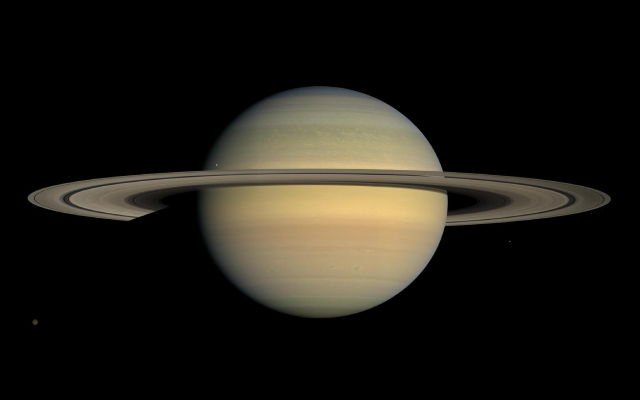
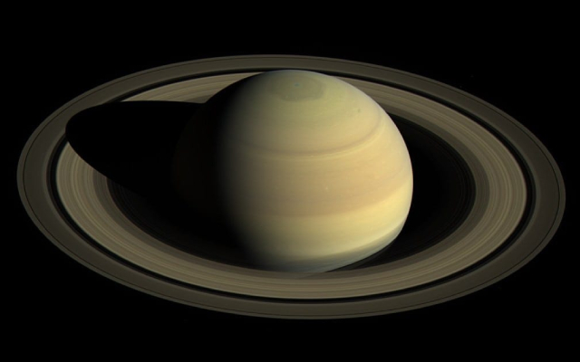
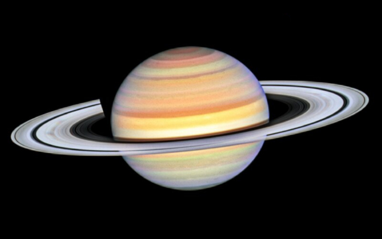

Saturn
Saturn is the sixth planet from the Sun, and also the second largest in the Solar System, after Jupiter.
Information

| Property | Value |
|---|---|
| Mass (1024 kg) | 568.32 |
| Volume (1010 km3) | 82,713 |
| Mean Density (kg/m3) | 687 |
| Surface Area | 42.7 billion km2 |
| Average Temperature | ~133 K (-140 C) |
| Wind Speeds | Up to 400 m/s (<30 degrees latitude); Up to 150 m/s (>30 degrees latitude) |
About Saturn


Saturn is the sixth planet from the Sun, and also the second largest in the Solar System, after Jupiter. And, much like Jupiter, it is also a gas giant, with an iconic "ring" feature surrounding it, composed of billions of pieces of ice, dust and rocks. As of 2025, Saturn has 274 confirmed natural satellites—nearly 3x the number of Moons orbiting Jupiter.